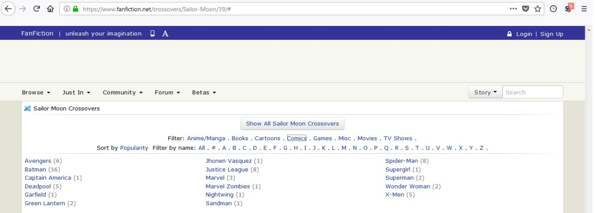

I’ll be honest: the thought of a Sailor Moon adaptation that heavily decentralizes / depowers Mamoru kind of makes me sad.
Admittedly, this is mostly true in a meta-level Cultural Trends kind of way rather than an object-level What the Story Needs to Work kind of way, so maybe it doesn’t or shouldn’t matter very much. And, well, I’m definitely not enough of a fan of the series that my reactions should be very relevant to anyone.
But, like…
One of the best things about SM is the extent to which it wears its heart on its sleeve, and isn’t too-cool-for-school in any way.
One of the defining features of the contemporary media climate is that straight romance, and especially traditional-coded straight romance where the heroine wants to play Feminine to a dashing protective guy playing Masculine, is very uncool indeed. You can find it, of course, there’s a huge demand and that demand gets met, but you see less and less of it in big works that expect to get mainstream elite approval.
So there’s already something weirdly square, in a charming and even moving sort of way, about the extent to which SM features Usagi and Mamoru spiraling around a very traditional model of romance. And that something becomes a whole lot better when you realize exactly how much work the narrative does to walk the incredibly fine line between “Tuxedo Mask is the Hero to Sailor Moon’s Heroine” and “Sailor Moon is definitely in every sense the protagonist, the one with real active power, and the one who is capable of taking on the real threats.” Mamoru isn’t a putz, he’s a genuine traditional-style hero who serves as a genuine savior and protector, but he also doesn’t upstage Usagi or even take up very much room in the overall narrative. That balancing act is virtuosic, and something real would be lost if it were abandoned.
Jews and Christians disagree on God the Son, but they both understand the metaphysical reality of God the Father.
St. Thomas Aquinas drew from the works of Jewish philosopher Maimonides to formulate his arguments for the existence of Gid. While Maimonides asserted that you can only describe God via negativa, St. Thomas Aquinas went beyond that by describing God with positive attributes: all-knowing, all-powerful, all-good.
The Jewish focus on not-idolatry was fairly important to my conversion.
warpedellipsis said: An atheist Jew is common, so no, “understanding the same reality” isn’t at all true, given that an atheist christian is not a christian and plenty would even call that evil.
Are you aware that I spent the last months before my conversion as something like an aspiring Atheist Catholic? I know at least one other such person here.
(Also, to what degree is an “atheist Jew” ethnic plus endurance of some of the anti-idolatry stuff I’ve mentioned?)
(Also, to what degree is an “atheist Jew” ethnic plus endurance of some of the anti-idolatry stuff I’ve mentioned?)
Oh boy, this thing.
EPISTEMIC NOTE: I am not an unbiased reporter here. I broke with the Judaism of my youth because I couldn’t swallow the metaphysical / historical / “doctrinal” claims, and the recent wave of “of course it’s OK to be an atheist Jew, that’s not what it’s about at all! :-) uwu” stuff makes me want to scream with rage. But I did in fact spend many years immersed in fairly serious Jewish study and practice, so this is not, like, coming out of nowhere.
Partly it’s an ethnic thing, yes. In a purely Eliadean sociocultural sense, one of the major emphases of any religion is going to involve knowing who’s in and who’s out. For Christians that determination is creedal, so creeds are going to matter to Christians. For Jews that determination is made in a totally different way, so belief can be a lot less important in certain ways.
But that is a [very partial] causal explanation of the thing, not a description of the thing.
Look. If you went to pretty much any rabbi in the world before let’s say 1950, and asked “does you think God exists? does that matter?,” you’d get an answer like: yes, of course God exists, and of course that matters, more than anything else possibly could. What are you, stupid? Have you not looked at a single thing we do? Have you not actually read the text of this book that we venerate more than anyone in the history of the world has venerated anything, or the text of these prayers that we recite many times every day? They’re all about God and why His existence matters!
(…almost “any rabbi.” There are, of course, outliers on the philosophical fringes, just as there are in any other religion.)
But it’s true that this basically doesn’t affect praxis, and never did. No one will ever ask you whether you believe. No one will try to talk to you about the shape or the content of your belief, unless you go to your rabbi with a crisis of faith or something, and then he’ll be pretty much winging it because the traditional sources don’t really touch on that stuff. You can go through your entire life as an observant but totally atheist Jew, and so long as you’re not bothered by the incoherence of things like “I am spending many hours praying to a fiction and explicitly claiming that it’s real,” nothing is going to get in your way.
The best analogy I can think of involves mathematics. You can imagine a mathematician who actually doesn’t believe that numbers, or even Aristotelian logic, reflect the real world at all – that math is just a silly game we play because we like the coherent rules, and that true existence is some kind of deceptive demonic nightmare where 2 + 2 doesn’t equal 4 and nothing makes any sense. This person would be considered eccentric by his fellow mathematicians, and indeed by everyone…but it wouldn’t affect anyone’s opinion of his math, or of his good standing in the mathematical community. The work is what matters, socioculturally speaking, and the justification for the work is beyond the scope of anyone’s concern, even if doing the work without the justification seems kind of bizarre and pointless.
The anti-idolatry stuff mostly just doesn’t come up in these contexts, as far as I can tell. Not much danger of honoring foreign gods if you don’t even believe in your god.
Ok, interesting.
(what happened after 1950? I kinda get the idea that education to Gentile children these days are in a kinda pre-1950 framework, which is possibly why Jewish-gentile relations are so incredibly contentious on Tumblr.)
I would add that (for the orthodox churches) membership is not only by Creed but also by Sacrament (baptism) which is permanent or immutable once performed… And can possibly be done by an atheist.
(This led to controversies of course, since one person may have the gift of both blood and water…)
My own “atheist quasi-Catholic” Creed would have begun, “I hope for one God…”. Said God actually showed up in May 2016 and has not departed from my life.
So “1950″ is a very rough date, we’re really talking about a suite of processes that are all very fuzzy and very gradual. But relevant developments include, e.g.:
* Widespread access to various scientific and intellectual developments have made naive simple theism increasingly less appealing to your average Jew-on-the-street.
* The legacy of the Holocaust gave us ~50 years of “the survival of the Jewish people” becoming a Jewish obsession, in a context completely divorced from any religious question, so cultural praxis without coherent religious underpinning became increasingly more appealing.
* Hand-in-hand with the above, anomie / atomism / whatever-you-want-to-call-it has been as much a thing for Jews as for everyone else in the developed world, and so you get the expected wave of people saying “I want a community and a tradition” and using that as a justification for praxis.
* The existence of Israel has provided many Jews with a totally non-religious focal point for cultural cohesion, which similarly provides a justification for praxis.
But of course all this is possible because the traditional praxis doesn’t touch directly on theistic belief in the first place, even if it obviously sort of assumes the existence of theistic belief as a starting point. Christ-as-portrayed-in-the-Gospels was a spiritual movement-builder, someone who talked a lot about why you should believe his claims and why that belief was important; there is literally no one in Jewish source material of whom this is true. (Even the prophets weren’t saying “you have to have faith in God,” they were saying “you have to act justly / stop praying to idols.”)
Jews and Christians disagree on God the Son, but they both understand the metaphysical reality of God the Father.
St. Thomas Aquinas drew from the works of Jewish philosopher Maimonides to formulate his arguments for the existence of Gid. While Maimonides asserted that you can only describe God via negativa, St. Thomas Aquinas went beyond that by describing God with positive attributes: all-knowing, all-powerful, all-good.
The Jewish focus on not-idolatry was fairly important to my conversion.
warpedellipsis said: An atheist Jew is common, so no, “understanding the same reality” isn’t at all true, given that an atheist christian is not a christian and plenty would even call that evil.
Are you aware that I spent the last months before my conversion as something like an aspiring Atheist Catholic? I know at least one other such person here.
(Also, to what degree is an “atheist Jew” ethnic plus endurance of some of the anti-idolatry stuff I’ve mentioned?)
(Also, to what degree is an “atheist Jew” ethnic plus endurance of some of the anti-idolatry stuff I’ve mentioned?)
Oh boy, this thing.
EPISTEMIC NOTE: I am not an unbiased reporter here. I broke with the Judaism of my youth because I couldn’t swallow the metaphysical / historical / “doctrinal” claims, and the recent wave of “of course it’s OK to be an atheist Jew, that’s not what it’s about at all! :-) uwu” stuff makes me want to scream with rage. But I did in fact spend many years immersed in fairly serious Jewish study and practice, so this is not, like, coming out of nowhere.
Partly it’s an ethnic thing, yes. In a purely Eliadean sociocultural sense, one of the major emphases of any religion is going to involve knowing who’s in and who’s out. For Christians that determination is creedal, so creeds are going to matter to Christians. For Jews that determination is made in a totally different way, so belief can be a lot less important in certain ways.
But that is a [very partial] causal explanation of the thing, not a description of the thing.
Look. If you went to pretty much any rabbi in the world before let’s say 1950, and asked “does you think God exists? does that matter?,” you’d get an answer like: yes, of course God exists, and of course that matters, more than anything else possibly could. What are you, stupid? Have you not looked at a single thing we do? Have you not actually read the text of this book that we venerate more than anyone in the history of the world has venerated anything, or the text of these prayers that we recite many times every day? They’re all about God and why His existence matters!
(…almost “any rabbi.” There are, of course, outliers on the philosophical fringes, just as there are in any other religion.)
But it’s true that this basically doesn’t affect praxis, and never did. No one will ever ask you whether you believe. No one will try to talk to you about the shape or the content of your belief, unless you go to your rabbi with a crisis of faith or something, and then he’ll be pretty much winging it because the traditional sources don’t really touch on that stuff. You can go through your entire life as an observant but totally atheist Jew, and so long as you’re not bothered by the incoherence of things like “I am spending many hours praying to a fiction and explicitly claiming that it’s real,” nothing is going to get in your way.
The best analogy I can think of involves mathematics. You can imagine a mathematician who actually doesn’t believe that numbers, or even Aristotelian logic, reflect the real world at all – that math is just a silly game we play because we like the coherent rules, and that true existence is some kind of deceptive demonic nightmare where 2 + 2 doesn’t equal 4 and nothing makes any sense. This person would be considered eccentric by his fellow mathematicians, and indeed by everyone…but it wouldn’t affect anyone’s opinion of his math, or of his good standing in the mathematical community. The work is what matters, socioculturally speaking, and the justification for the work is beyond the scope of anyone’s concern, even if doing the work without the justification seems kind of bizarre and pointless.
The anti-idolatry stuff mostly just doesn’t come up in these contexts, as far as I can tell. Not much danger of honoring foreign gods if you don’t even believe in your god.
like, eesh, i know this is really fucking petty to be complaining about when they are literally putting kids in fucking cages but
i’m so tired of how posturing against Nerd Culture ™ has become part of the leftist party line, even if you’re gonads deep in Nerd Culture yourself
like. yes. i am fully aware that Nerd Culture ™ has some serious problems and there are some really nasty bigots there and they need to get the bigotry stick out of their fucking anii, but.
it honestly seems like the whole tumblr ‘LET’S MAKE FUN OF NERDS/GAMERS/PEOPLE WHO LIKE BAD SHIPS’ is based in ableism and self-loathing more than anything valid. at best it’s misguided attempts at ‘punching up’ and hurting people who hurt you back; at worst it’s just general high school bullshit. it’s making fun of the ‘weird’ ‘greasy’ kid who wears a top hat and talks about my little pony too much and doesn’t perform their gender correctly. or making fun of the ‘fat neckbeard’ who’s autistic and doesn’t have the best grasp on personal hygiene. or making fun of the ‘creepy’ fat otaku dude who says awkward things about how he’s more interested in anime girls than real ones… because, guess what, he’s asexual and doesn’t have the words for it. or, or, or, or, or, list goes on.
it’s like, do you really care about fighting bigotry, or do you just want to be able to be the ones bullying other people? if it’s the first one, why the fuck are you always picking on marginalised people? if it’s the second one, why the fuck are you in my justice space?
Bluh. So…
I appreciate this post, and the sentiments that appear to lie behind it. I really honestly do. You are speaking up for kindness, and speaking out against people who seem invested in cruelty.
But this kind of rhetoric always makes me a bit twitchy. I guess I’m not totally sure what you mean by “marginalised” here, but it usually translates to “falling into a generally-understood generally-approved Sympathetic Oppressed Persons category” – and this seems underscored by the three specific archetypes you cite, which boil down to “the nerd is actually gender-nonconforming!” and “the nerd is actually disabled!” and “the nerd is actually asexual!”
Because sometimes that turns out to be true, but a lot of the time it doesn’t. A lot of the time, the awkward nerd really is just a straight white dude. A lot of the time, the social weirdness doesn’t rise up from some diagnosable disability, it’s just…weird.
And everyone, on every side of the discourse, knows this perfectly well. Trying to shield the nerds, as a class, under the umbrella of “they’re members of oppressed protected groups” just isn’t going to work in the long run – they don’t have the right kind of oppression narrative, they don’t have the right kind of community identity, it’s too often just a bad fit.
The question is: does that mean it’s OK to be cruel to them? Does that mean that their suffering doesn’t matter?
To which the only possible answer for a decent human being is “of course not.” But you can’t get there through the plays in the basic SJ playbook.
I’m sorry. I know this isn’t the discourse you meant to be having; I know that I’m kind of reacting to things that you didn’t actually say. I just…want to illuminate some of the dynamics that are in play, here, in this infernal meta-conversation.
also sailor uranus and sailor neptune (and let’s say sailor ceres, round the team out) are state-sanctioned superheroes with the full backing and material support of either SHIELD or its Japanese governmental equivalent because Japan has to have its own version of everything. the sailor team has to use hardware- or thrift-store supplies for everything that isn’t covered by their magical gear, and the outers have professionally made superheroing equipment. when they show up to find and ‘neutralize’ Sailor Saturn, they have some other heroes with them, like say black widow and war machine, who report to them and thus serve as antagonists to the sailor team.
because the thing that makes the outers work as antagonists in S is that usagi looks up at them and goes “oh my God you guys are socool, you have your lives totally together, I look up to you and want to be you because you are the apotheosis of what every kid thinks a Cool Grown-Up is”, and then finds the cost of having everything she aspires to, is giving up on the “childish” notion of hope that defines her
how do you do mamoru and chibiusa though
the core of what mamoru does and what he is is something that A: you cannot do in a movie and B: goes against what everything else is doing. oh and C: after season 1 the anime has absolutely nothing to do with him. but because usagi’s love for him is such a huge portion of her origin, you can’t ignore him – but what he does doesn’t work with anything else!
so much of what chibiusa is tied into totally breaks the world and cannot be made to play well with anyone else. you can cut that out and give her another origin (like queen serenity’s biological daughter fostered to queen beryl then flung forward in time) to be someone who emerges from a murky space with a relationship to usagi that pushes her into a relationship that is belligerent but close. but then she’s still not usagi’s daughter, which is surmountable, as they don’t act like a mother and daughter. without the authoritative “well my future self said this was a good idea and she seems pretty on the ball” thing to afford legitimacy, why would she ever get involved in any of this nonsense that might be dangerous? why would anyone let her?
To begin with, any Tuxedo Mask parts have to be wiped away into a single Easter Egg fanservice line of dialogue, or a post-credits scene that never gets followed up on. But otherwise, the MCU’s take on Mamoru’s kind of character is actually pretty common. Sure, it’s one of the things criticized about the MCU, that the love interest that doesn’t get to do much and is lip-service important only, but is common nonetheless. And Sailor Moon’s various source materials pretty much agree: Mamoru is basically Jane Foster as the plot MacGuffin in the first half of Dark World.
And so, the chosen MCU solution for these “normie-type” love interests (Christine Palmer, Betty Ross, Jane Foster) is to quietly write them off with a single line of dialogue, or just to ignore them entirely, in the case of Ross. Even Pepper’s role is continually diminished and they take the time to de-power her, but that can point to a slightly less story-problematic approach to Mamoru. He gets some lip service plot importance at some point (wears the armor, one moment of wielding the sword before he gets smacked down), Usagi saves him, techno-babble explains why he can no longer manifest his powers, Mamoru from then on is just the supportive love interest figure who pops in for single scenes whenever the writers wanna get their Thin Man banter on.
The Flash did a time travel kid this season. I don’t watch the Flash, so I don’t know if it worked. The Young Justice cartoon had Bart Allen show up. You have the weirdness of River Song and Amy Pond. There were the future kids from Charmed. I think it’s doable, as long as Chibiusa only shows up for specific missions, rather than hanging around without a purpose. Not unlike Thor being on Earth, actually. He shows up, does a mission, leaves for Asgard. Similarly, Chibiusa has to show up with a purpose, complete it, and then return to the future. Part of what would make this palatable for the mainstream, though, is to never outright say who Chibiusa is, only have easter egg hints. To any audience not in the know, she’s just someone who brings exposition and stakes in the form of how well/badly the future is going.
Otherwise, you have the “comedy the hell out of this premise” MCU tactic, wherein the film is actually a (not so) subtle send-up of Back to the Future, set from Chibiusa’s perspective. So we get to see the senshi the way Spiderman Homecoming sees Tony Stark.
I mean, Mamoru could be a spud, but people complain about the spuds, and Usagi would go after him rather than let him go off to Idaho to be with the other spuds on the spud farm.
Don’t cite Charmed as evidence a premise will work. That’s bad. That’s no good. That season made no sense (it had a very good ending, though). And Dr. Who is just nonsense from a continuity perspective, it can’t be predecent.
She can’t be Future Trunksing it and showing up from the future for missions, because this world has superheroes, any one of them is better than her at whatever her mission is, why is she doing it? It makes sense if she does it by accident once, not multiple times. But her entire presence in R is her not being on a mission at all, and her most important role in S is not related to that at all and would be vastly cheapened if it was a “mission” (because it’s to be Hotaru’s friend). If you just have a character who is from the future, and there’s no explanation of why or how (since you can’t do that), and they’re not even the most important thing going on in that movie, the audience is going to be irate. What is she going to look like, if the audience doesn’t already know?
OK, since this now seems to be reasonably central to the game being played here, I’m going to be a party-ruiner and ask:
My initial understanding of the prompt was “figure out what Sailor Moon would look like as a modern big-budget spectacle-heavy Save-the-Cat-savvy Western cinematic universe.” Apparently the prompt is actually “figure out what Sailor Moon would look like if it were jammed into the literal MCU.” And, like…why?
I understand the appeal of that first thing as an exercise in narrative wrangling and genre translation (which are indeed skills that ought to be exercised more often and in more places). My sense is that going from there to the second thing is almost entirely deadweight loss. It’s something you can more or less do coherently, in the sense that the Marvel universe is already such a thematic kitchen-sink clusterfuck that it’s not going to cause any more problemsto insert yet another group of heroes with a totally orthogonal concept, but…it is in fact going to do damage to the Sailor Moon story, and I’m not seeing what the gain is. Sailor Moon stories and conflicts are built around the idea that magical girls are (a) unlike any publicly-known thing and (b) the best possible tool to deal with their associated problems and villains; also they have a very distinct narrative-aesthetic style. Saying “oh, yeah, Black Widow was there too” has basically no upside that I can see.
the only thing I said that tied in to the literal MCU is the Outers thing, which is part of their theming, to make them work. they are cool and have cool gadgets and appear to be eating at the Big Kids Table by being a part of the bigger world of superheroes and bossing them around. This is because you cannot present them as “a race car driver and violinist” to get across the same notion of “these guys have it all going on, they are the Cool Big Kids”. I’m not throwing in Black Widow for no reason, it is because it is crucial to these characters’ functioning that you first see them and go “Whoa, these guys are in a higher class!” and “they run with superheroes and have superhero gear and have a crossover thing like it’s no big deal, while we still need to worry if we can get Minako’s mom’s car and have used craft glitter in battle on more than one occasion” is a way to convey this.
but part of the exercise is to make the continuity play well with others, which as a crossover writer can tell you, it very much does not. you say the Marvel universe is such a clusterfuck that you can insert anything, and you are wrong, because you stick the original Sailor Moon manga on that and you have irrevocably broken almost everything they are doing. How do you get across what Sailor Moon is doing, in a way that doesn’t break everything else in the entire world, and can thus fit in a world? That is the exercise. You might as well use the most successful example of a shared universe. You want to put Sailor Moon in the fucking Dark Cinematic Universe, you’re going to have most of the same challenges, except you’re going to have way less fun.
Hrm.
you say the Marvel universe is such a clusterfuck that you can insert
anything, and you are wrong, because you stick the original Sailor Moon
manga on that and you have irrevocably broken almost everything they are
doing.
Unless we’re using our terms in very different ways – which is certainly possible – Marvel has already done this, and semi-ruined itself / its own properties, over and over again, for the sake of having a big shiny chaotic expanded universe.
Ghost Rider is the clearest example. Ghost Rider really wants to take place in a universe with vaguely Christian-ish metaphysics, where concepts like “sin” and “atonement” and “damnation” and “salvation” have real weight. You can say “Mephisto is an alien from another dimension instead of being the Actual Literal Devil, and the Ghost Rider metaphysics are all just weird psychic-phenomenon one-offs that don’t really apply in most places”…and that’s exactly what Marvel does…but it means that the narrative loses a lot of its heft, and its protagonist is rendered kind of silly, since he’s now just a Very Edgelordy Superhero instead of being someone who has contended with the fundamental moral forces of existence.
But really you get this all over. The X-Men narrative relies on “normal people think that freaks-with-superpowers are inherently threatening and disgusting,” and it kind of falls flat in a world where Reed Richards and Thor can be uncontroversially beloved icons because they’re not technically mutants. The situation is similar with Spider-Man, whose “weird threatening mysterious activities” are just bog-standard superhero-ing in a world where that’s a known thing. The Norse gods lose a lot of moral and narrative potence when it turns out that really they’re just another gang of superpowered aliens. Hell, even Daredevil has stories that depend on concepts like “this ninja clan is a serious global threat,” and anyone who knows what actual serious global threats look like in the Marvel universe will necessarily find this laughable.
So, yeah, by those standards you can definitely find a way to jam in Sailor Moon. The Crystal Millennium is an alternate timeline or a psychic echo of regular-Earth or something, and no one has any reason to give a shit except the particular heroes involved with that plotline. It’s standard procedure. But, well, you’re very right, this is going to be absurdly terrible for the Sailor Moon stuff. Which is why I just casually assumed that you were intending to have it stand on its own within the modern-cinematic-universe paradigm.
…and I had more to say on the topic of “how to do the Outer Senshi,” but it’s obviously a completely different question if it’s supposed to be taking place within the Actual Fucking MCU, so I guess I’ll consider further.
also sailor uranus and sailor neptune (and let’s say sailor ceres, round the team out) are state-sanctioned superheroes with the full backing and material support of either SHIELD or its Japanese governmental equivalent because Japan has to have its own version of everything. the sailor team has to use hardware- or thrift-store supplies for everything that isn’t covered by their magical gear, and the outers have professionally made superheroing equipment. when they show up to find and ‘neutralize’ Sailor Saturn, they have some other heroes with them, like say black widow and war machine, who report to them and thus serve as antagonists to the sailor team.
because the thing that makes the outers work as antagonists in S is that usagi looks up at them and goes “oh my God you guys are socool, you have your lives totally together, I look up to you and want to be you because you are the apotheosis of what every kid thinks a Cool Grown-Up is”, and then finds the cost of having everything she aspires to, is giving up on the “childish” notion of hope that defines her
how do you do mamoru and chibiusa though
the core of what mamoru does and what he is is something that A: you cannot do in a movie and B: goes against what everything else is doing. oh and C: after season 1 the anime has absolutely nothing to do with him. but because usagi’s love for him is such a huge portion of her origin, you can’t ignore him – but what he does doesn’t work with anything else!
so much of what chibiusa is tied into totally breaks the world and cannot be made to play well with anyone else. you can cut that out and give her another origin (like queen serenity’s biological daughter fostered to queen beryl then flung forward in time) to be someone who emerges from a murky space with a relationship to usagi that pushes her into a relationship that is belligerent but close. but then she’s still not usagi’s daughter, which is surmountable, as they don’t act like a mother and daughter. without the authoritative “well my future self said this was a good idea and she seems pretty on the ball” thing to afford legitimacy, why would she ever get involved in any of this nonsense that might be dangerous? why would anyone let her?
To begin with, any Tuxedo Mask parts have to be wiped away into a single Easter Egg fanservice line of dialogue, or a post-credits scene that never gets followed up on. But otherwise, the MCU’s take on Mamoru’s kind of character is actually pretty common. Sure, it’s one of the things criticized about the MCU, that the love interest that doesn’t get to do much and is lip-service important only, but is common nonetheless. And Sailor Moon’s various source materials pretty much agree: Mamoru is basically Jane Foster as the plot MacGuffin in the first half of Dark World.
And so, the chosen MCU solution for these “normie-type” love interests (Christine Palmer, Betty Ross, Jane Foster) is to quietly write them off with a single line of dialogue, or just to ignore them entirely, in the case of Ross. Even Pepper’s role is continually diminished and they take the time to de-power her, but that can point to a slightly less story-problematic approach to Mamoru. He gets some lip service plot importance at some point (wears the armor, one moment of wielding the sword before he gets smacked down), Usagi saves him, techno-babble explains why he can no longer manifest his powers, Mamoru from then on is just the supportive love interest figure who pops in for single scenes whenever the writers wanna get their Thin Man banter on.
The Flash did a time travel kid this season. I don’t watch the Flash, so I don’t know if it worked. The Young Justice cartoon had Bart Allen show up. You have the weirdness of River Song and Amy Pond. There were the future kids from Charmed. I think it’s doable, as long as Chibiusa only shows up for specific missions, rather than hanging around without a purpose. Not unlike Thor being on Earth, actually. He shows up, does a mission, leaves for Asgard. Similarly, Chibiusa has to show up with a purpose, complete it, and then return to the future. Part of what would make this palatable for the mainstream, though, is to never outright say who Chibiusa is, only have easter egg hints. To any audience not in the know, she’s just someone who brings exposition and stakes in the form of how well/badly the future is going.
Otherwise, you have the “comedy the hell out of this premise” MCU tactic, wherein the film is actually a (not so) subtle send-up of Back to the Future, set from Chibiusa’s perspective. So we get to see the senshi the way Spiderman Homecoming sees Tony Stark.
I mean, Mamoru could be a spud, but people complain about the spuds, and Usagi would go after him rather than let him go off to Idaho to be with the other spuds on the spud farm.
Don’t cite Charmed as evidence a premise will work. That’s bad. That’s no good. That season made no sense (it had a very good ending, though). And Dr. Who is just nonsense from a continuity perspective, it can’t be predecent.
She can’t be Future Trunksing it and showing up from the future for missions, because this world has superheroes, any one of them is better than her at whatever her mission is, why is she doing it? It makes sense if she does it by accident once, not multiple times. But her entire presence in R is her not being on a mission at all, and her most important role in S is not related to that at all and would be vastly cheapened if it was a “mission” (because it’s to be Hotaru’s friend). If you just have a character who is from the future, and there’s no explanation of why or how (since you can’t do that), and they’re not even the most important thing going on in that movie, the audience is going to be irate. What is she going to look like, if the audience doesn’t already know?
OK, since this now seems to be reasonably central to the game being played here, I’m going to be a party-ruiner and ask:
My initial understanding of the prompt was “figure out what Sailor Moon would look like as a modern big-budget spectacle-heavy Save-the-Cat-savvy Western cinematic universe.” Apparently the prompt is actually “figure out what Sailor Moon would look like if it were jammed into the literal MCU.” And, like…why?
I understand the appeal of that first thing as an exercise in narrative wrangling and genre translation (which are indeed skills that ought to be exercised more often and in more places). My sense is that going from there to the second thing is almost entirely deadweight loss. It’s something you can more or less do coherently, in the sense that the Marvel universe is already such a thematic kitchen-sink clusterfuck that it’s not going to cause any more problemsto insert yet another group of heroes with a totally orthogonal concept, but…it is in fact going to do damage to the Sailor Moon story, and I’m not seeing what the gain is. Sailor Moon stories and conflicts are built around the idea that magical girls are (a) unlike any publicly-known thing and (b) the best possible tool to deal with their associated problems and villains; also they have a very distinct narrative-aesthetic style. Saying “oh, yeah, Black Widow was there too” has basically no upside that I can see.
What’s
up with the notion that we should automatically switch to meta-level
reasoning and deontology when talking about these issues? Working in
Trump administration is bad. Being gay is not. These things are not the
same. Not because one is a choice and the other isn’t, but because Trump
administration is actively harming people, whereas gayness is not.
Yeah, this issue looks differently from the perspective of someone who
thinks that non-whites and degenerates are ruining the society - but so
what, they’re assholes and they’re wrong! Talking about this issue
purely on meta-level is as misguided as talking about teaching
creationism vs evolution, telegony vs actual evidence-based sex ed, and
flat earth conspiracy vs actual geography in public schools while
completely ignoring the issue that some of these things are wrong, and
others are right.
It’s great to build institutions and processes with high inertia to
ensure that no one gets too overpowered, and if your enemies come to
power, they wouldn’t do as much damage, even if creating these
institutions may impede your own agenda. But: (1) people keep
overestimating the commitment that their enemies have to these
institutions and systems. Nice emoluments clause you got there. Wouldn’t
it be a shame if when it came to it, no one actually gave a shit about
it? And (2) you can’t just do politics solely by building institutions
on top of institutions - you need to use them to actually make the world
a better place.
Or rather, sure, it’s OK if your cause area is institutions and
nothing else - I’m fine with ACLU doing that. But it’s wrong to assume
that politics end with institutions or that every single action must
pass the deontological filter of “but what if people who think that the
moon is made of cheese, and we are morally obligated to paint it green
come to power and use similar tactics?” It’s actually OK to say that not
all beliefs about the reality are equally true and not all ethical
systems are equally good, and the ones that are better should be acted
upon, whereas those that are worse should not.
If it’s just, like, “do I approve of this thing”, then I think this is fine, though I may want to see that someone can show their work (i.e. that their sense of right and wrong is principled rather than purely intuitionist). You can totally just look at it this way and there’s no problem; I think that most people think like this and then have to translate it into a procedural coalition-based language.
The problem is when you want a meta-level solution – by getting the government involved, or establishing general norms, or whatever. No, of course our enemies aren’t seriously committed to shared meta-level instutions (nor, to be fair, are we), but they’re far more committed to them than they are to our object-level judgments. And if we’re going down to object-level judgments, the government is definitely going to favour “person in the Trump administration” to “person who is gay”; this will likely continue even after the government cycles to enemies of the Trump administration, simply because the state has a legalistic desire to protect its prerogative. In many places, the public conscience would endorse that judgment; there it may not be kept well in check by proceduralism but it certainly won’t be checked at all by anything else. You can’t really compare it to creationism vs. evolution because you’re never going to get “evidence” in the way we have there – the bone of contention isn’t an underlying foundation of disputed facts that we can test (unless you just want to try to demonstrate that religion is wholly false, in which case good luck with that).
I agree that people shouldn’t be held to a proceduralist standard in their personal morality – morality doesn’t actually work that way, and in any case it’s personal. Probably I should have mentioned that earlier, as the OP does shade a bit into criticizing people’s personal judgments. But I disagree with the framing that the meta-level considerations are abstract and remote, while the object-level ones are
pragmatic
and
immediate – if your levers for operating on a problem are primarily institutional, reasoning that obeys the institutional idiom and follows its rules are more practical, not less. What we think is really true as our personal moral beliefs, that’s the airy abstraction when it comes to society-level outcomes. Similarly, when you want to use your built-up institutions to do good, you generally want to do so by working with the meta-level rules, not against them, because those are the only mechanisms that allow institutions to have direct influence without rattling themselves to death or leaning on corruption-ridden side-channels (which can be effective, but rarely for morally uplifting shit).
I can’t speak for anyone else, but that’s where I’m coming from.
Total culture war is bad. And that’s not just about the current stupidities – the danger of culture war will always loom (unless you have sovereign monocultures, which is a cure much worse than the disease).
Procedural meta-level rules are the way you avoid total culture war. So long as the norm is “we will punish anything we believe to be bad with the full force of legal and social censure, and we will allow anything we believe to be good regardless without procedural restraint,” everyone will know that winning ideological allies and demonizing your ideological enemies is always going to be a top strategic priority. I hope we’ve learned by now that that’s no way to live.
here is your challenge of the now: outline a Sailor Moon feature film in the Marvel Cinematic Universe
oh you know you want to
there are interesting challenges
you all are cowards

[screenshots of SM crossover pages on ff.net and AO3] They already exist bruh
the idea is making something work in a format change
“marvel movie” is a clearer kind of criteria than “movie”
I don’t want “Usagi meets Steve Rogers and they have coffee”, I want “how are we going to make a major film with five completely new, completely distinct heroines when we can’t have individual movies to introduce each of them” and “how do we make the character of Sailor Moon work in the big climactic parts of her stories when she isn’t explicitly the most important person in the world” and “how do you condense and capture the essence of this character the way that Marvel movies condense and capture the essence of their own?”
Micro-level thoughts:
* It goes against established Sailor Moon canon (mostly) (I think, it’s been ages), but I would be sorely tempted to have Usagi first meet the other Senshi in their Senshi identities in a crisis when they’re forced to work as a team, and then start getting to know them as actual people afterwards. There aren’t a lot of team-hero movies that work well, and one of the reasons for this is that the process of going through “this is Dude X’s backstory setup, this is Dude Y’s backstory setup, etc.” is super tedious and draggy even if you try to abbreviate it to near-pointlessness. Once we’ve already seen Sailor Mercury kicking ass and saving people we care about, then it becomes more interesting that she’s smart and shy etc.
* The first movie would benefit a lot from keeping the story small-scale, which Spider-Man narratives generally do and nothing else in the genre does at all. Usagi isn’t the most important person in the world, but she doesn’t have to be, because we’re not trying to save the world (yet), we’re trying to save a city or a district or a school. We can play around with the personal / psychological aspects of growing into heroism without ratcheting the stakes up to 11 immediately. Maybe the whole first movie even plays around with the idea that Sailor V / Venus is the real main heroine, etc.
“Reported problems” is always going to correlate with “people’s willingness to defect against group members by reporting problems” and…even more importantly…“people’s inclination to perceive that a given thing is a problem, and moreover the kind of problem where reporting it would be a sane response.”
This is going to confound your comparison data into uselessness basically no matter what. You know nothing.
not that people are, like, wrong about being against anti-man jokes
but I’m married to a guy who finds anti-male jokes funny which makes it sort of weird to read people’s psychoanalysis of what deep-seated issues a guy has to have to find them funny
I know absolutely nothing about your husband or his thoughts regarding jokes, but…there’s a huge gulf between “performatively humorous misandry is funny in the way that dead baby jokes are funny” reactions and the sort of “ha ha it’s so true” reactions that you get from certain guys.
Friendly reminder that the Barber Pole Model of Fashion is utterly wrong. It makes sense, and I can understand why people might imagine that fashion works this way. However clothing is expensive and the lower classes can’t actually emulate the upper classes.
(Quick poll: do you own $800 shoes? Because that’s how a lower bound on how expensive your shoes need to be to pass as upper class).
Actually this is kind of a black mark on the community’s epistemic record. AFAICT everyone just assumed the model was correct and never bothered to check that fashion actually works that way?
Reblogging to remind myself that I have thoughts on this.
The argument specifically doesn’t say that the lower classes emulate the upper classes - just that they emulate the *class above them*, which is different than emulating the very upper class.
Also, how does fashion actually work?
I don’t have a Comprehensive Model of Fashion but some things to consider when I think about this more:
-class is not purely based on income. Anyone who’s sat through my mom’s rants on how important it is to differentiate oneself from “white trash” would know this but I recognize it isn’t a privilege everyone has been lucky enough to grow up with :P
-need to find something I read once on how baby name trends move through the classes (definitely a fashion, has zero cost barriers)
Anyone who thought the barber pole model was a complete account of fashion was pretty silly. But it’s also pretty clearly a reasonable component of an account of fashion. It’s one thing that happens; it’s not the only thing that happens.
I have a bunch of quibbles with the $800 shoes example, too.
This is a very specific subset of “upper class”, which often isn’t what people are referring to. I know the groups you’re talking about, but there are lots of people who would reasonably be described as “upper class” that mostly don’t wear $800 shoes pretty much ever.
Most people actually can’t tell the difference between 800 dollar shoes and 200 dollar shoes. It’s not that hard to find 200 dollar knockoffs of 800 dollar shoes. The differences do exist, and they make it hard to hard to fool people who really know and care about the difference. But most people don’t.
If you’re a person who is wearing 200 dollar shoes to imitate richer wearers of 800 dollar shoes, your peers, whom you’re actually trying to impress, probably can’t tell the difference either. You can easily have a fashion trend among class N of imitating what they think class N+1 does, even if they’re completely wrong. (See: “a stupid person’s idea of how a smart person talks”; Trump et al. as “a poor person’s idea of a rich person”).
Some class signals are expensive, but not all are, and those can easily be the subject of fashion trends. There have been points, at least, in the tech sector, where “wearing t-shirts to work” was effectively a positive class signal.
P.J. O'Rourke covered this in Modern Manners thirty years ago:
Dressing like a rich man is not, however, a matter of wearing flashy and expensive clothes. Life is not that simple Everyone wants what he doesn’t have. Everyone enjoys pretending to be what he isn’t. It’s poor men who wear flashy and expensive clothes, pretending to have money. Rich men wear sturdy and practical clothes, pretending to have brains. Thus, if you want people to think you’re wealthy, don’t dress rich, dress smart.
…
People who are actually smart wear orange short-sleeve shirts with plastic pen shields in the pocket, make eighteen thousand dollars a year designing electronic circuitry, and don’t know from neckties—which shows what brains will get you.
OK, derailing to ask the internet:
What is the discernible difference between $200 shoes and $800 shoes in a similar style? Because I sure as hell don’t know.
Are we just talking about, like, “extremely minor variances in stitching quality” and other connoisseur-tier rigamarole, or is there some substantive difference that you can see if you know what you’re doing?
sometimes I think about how nearly all discourse about the cultural role of fandom and transformative work is a distortionary byproduct of the runaway cultual enclosure effected by the modern IP regime and has no actual relevance outside this topic that it resists engaging with directly and then I get sad
This seems…overbroad.
1) A “sane”-but-not-radically-liberal IP regime would involve usage of new works still being restricted, and most active fandoms actually do center on new stuff. It’s true that we wouldn’t be doing this weird thing where resurrecting old successful IPs (superhero comics, LotR, Star Wars, etc.) was the surest road to a smash-hit “new” IP, and that would have reasonably big effects in the relevant culture, but seems like a different sort of issue.
2) I suspect that, even without IP restrictions, the concept of canon would develop spontaneously in modern fandoms. It’s really hard to be able to communicate meaningfully with kindred spirits about the awesomeness of Harry Potter if there’s no real way to agree on who Harry Potter is. And once you have a canon, you have the canon/fanwork distinction, and we’re off to the races.
I have never seen the word “woke” used unironically and TBH I’m not sure I believe that it actually exists.
I have, but not for about a year.
It’s probably not very accurate anthropologically at this point, but it is incredibly useful, as a short encapsulation of “all those things that social-justice-y folks aspire to and demand of others.” I can’t speak for anyone else, but my usage of the term isn’t mostly ironic, it’s “I need a word for this thing and don’t have a better one.”
A lot of social theories that you see these days, coming from all sides of the political universe, hinge on the lots-of-good-fish-in-the-sea model of sex and romance. (Also other kinds of relationships, sometimes, but let’s just talk about sex and romance for now.) “Having a relationship with someone under $SOME_PARTICULAR_CIRCUMSTANCE poses a bunch of potential problems. So you should never do it, and we will punish you if you do! You can just go find a relationship with someone else!”
It turns out that this is a really broken model, especially for people who are not-totally-normal in any serious way. Humans are not fungible. When you meet someone, at least on some level, you will never meet anyone like that person again – and while in many cases the relevant differences aren’t very substantial, there are also many cases where they are. Sometimes staying away from someone means killing a beautiful, totally-irreplaceable thing. Sometimes one individual is the difference between a life of joy and a life of misery.
And that’s true even if that person is your boss. Or your professor. Or your first cousin. Or even your sibling, I guess. There are like a million of these, and they always seem incredibly distasteful and pointless until suddenly the person you love falls into the relevant category.
Now, to be clear: it’s not wrong to say “some circumstances make relationships many times riskier than normal, some circumstances are ripe for abuse and horror.” This is 100% accurate.
It is a cost. It gets weighed against the cost of “society has deemed that your love is A Problem and therefore forbidden regardless of how anyone involved actually feels,” which is a cost whose weight you should understand very well indeed, whatever your particular personal politics happen to be.
So how do you resolve a balance-of-costs problem?
Well, if you’re a policy-maker or a norm-setter, you can in fact just steamroll any objections and issue a blanket rule. And maybe the utilitarian calculus would justify that. Maybe you’re correct that the chances of victimization / cultural disease / birth defects / whatever are so much weightier than whatever-joy-will-come-out-of-these-unions that it makes sense to be the Relationship Police. But at the very least, this is a thing you should do solemnly, with a keen awareness that you are wrecking actual individual lives – and trampling on normal, culturally-key standards of individual autonomy in the realm of personal satisfaction – in order to achieve your aims.
Or you could try to introduce mitigation protocols. You could spread memes to the effect that relationships of Type X are minefields of potential disaster, much more so than other relationships on average, and therefore anyone entering into one would be wise to take precautions A B and C for the sake of his own welfare, and that doing so is a sign of love and faith-in-the-relationship rather than the reverse.
But, y’know, to do that you actually have to be willing to admit that sometimes a relationship of Type X is the right thing.
Do not think that I am celebrating, happily, Balioc.
Much of human history involves wars of conquest, competition, and displacement, not peaceful coexistence.
Civilization is fragile. A significant disruption to food or water supplies or even electricity could topple the country. A sufficient collapse in birth rates could leave millions of elderly people to die in an economy that cannot support them. And so on, and so forth.
When cousin marriages were at or under 1% of the population, we could afford to ignore them almost entirely. A bit higher, so long as it isn’t intergenerational, might be sustainable.
It was when various Western countries started importing populations where the rate was much, much higher that it became a problem.
The thresholds matter. It makes a big difference whether something is 1:10,000, 1:100, 1:10, or 1:2.
Hit 50%, and you become Pakistan. Do you want to live in Pakistan, Balioc?
Because I sure don’t.
Development can go backwards. It has, in various times and places. Humanity may not require an iron fist, but it does require some level of discipline.
You can have the cousin marriages back once the rate among all sub-groups collapses back to something under 4% and it is once again de-normalized.
Leaving aside all other considerations – in making your points against cousin marriage, you repeatedly and explicitly say “taking this precaution will cost us virtually nothing; even if you suspect this is pure voodoo logic, we should go ahead and institute the ban on the off-chance that the voodoo works, because the downside is so low that we effectively get this one free.”
It’s not free if you’re in love with your cousin. And the ease of steamrolling that kind of thing is precisely why people get defensive about the rules that safeguard their individual autonomy.
I’m not in a position to say whether or not you’re celebrating, but you certainly don’t sound like someone who’s advocating a great sacrifice for a greater good.
You’re forgetting something.
Some of the cultures this practice is coming from will do things like “honor” killings or acid attacks as a means to control women.
Consider child marriages. Some people might potentially miss out on true love if we ban them. However, the vast majority of the time, child marriages are going to take place in an atmosphere of coercion, and “but what if the child wants to marry a man twenty years her senior?” is only acting as cover for this.
Children cannot be reasonably expected to refuse even if they genuinely want to, because they lack the power to do so.
However, if child marriage is illegal, the child can make the appeal “but it’s illegal! The state will punish you!” (Or, more frequently, the adults involved will have to hold off for some years out of fear of being punished by the state, giving the child time to become more powerful and able to resist coercion.)
There is a real potential cost, however that’s quite small compared to the potential benefit. If someone really does want to get married to someone at the age of 15, then we’ve deprived them of 3 years of that potential marriage. If someone doesn’t, then we’ve just given them a way to escape a lot of pain.
I’m significantly less liberal / liberaltarian than a lot of people around here. In fact, some might even call me “right-wing,” or “right-wing, but in like a weird way.” (Or perhaps even “the right-wing of a country that doesn’t exist.”)
I consider the cost of banning child marriage relatively small, and I think that we should do so. To heck with the religious exemptions. Freedom of religion is a means to manage the fact that so many people have been mentally bound by warring religions without them killing each other. It’s an evolved response.
What is the “natural” rate of cousin marriage? Is it 50%+, as in some regions of the world where it is a means to reinforce the patriarchal line, or is it closer to the 1% of the Western peoples, or a few percent more for parts of Asia?
I’m inclined to believe it’s one of the latter, and thus it could be cut in some populations by a factor of 10-50x before we even get into the group of true cousin lovers you’re trying to protect.
Do these groups genetically differ so they only love cousins? I very seriously doubt it. Are we not cousin marrying enough to find true love here in the West? I very seriously doubt that, too.
And how many of that remaining group could not find a high-quality relationship without marrying their first cousin? How many would truly face the question of marry their cousin or be forever alone? Nine in ten? One in ten? One in one hundred?
I can’t just ban cousin marriages for one ethnic group and not others, until the cousin marriages in that one group came down towards regular population norms for that geographical region. That would be considered racist. I can’t establish a cap-and-trade system for cousin marriages. That’s politically non-viable in any typical country.
Are you trying to horrify me with parallels to other kinds of relationships that are considered Automatically Problematic? Because I started by pointing out that there are all kinds of relationships that get bucketed as Automatically Problematic, and that oftentimes there is in fact a huge extra risk factor involved there…but that also there are always costs to blanket bans that should be taken seriously.
There is a real potential cost, however that’s quite small compared to
the potential benefit. If someone really does want to get married to
someone at the age of 15, then we’ve deprived them of 3 years of that
potential marriage.
Putting the value judgment aside, the empirics here are certainly correct. Which does make the case that the various incest taboos are among the most potentially destructive relationship restrictions; you can wait until you’re of age if that’s the issue, you can find a different job or a different class or whatever, but you can never stop being someone’s cousin.
Are we not cousin marrying enough to find true love here in the West? I very seriously doubt that, too.
Heh. I actually do suspect that, given genetic compatibility etc., we are cousin-marrying at a psychologically suboptimal rate (due to taboo).
But of course the relevant factor is not “would a ban actually ensure that you could never ever find love again?” Anyone whose valued relationship or potential-relationship gets destroyed this way is quite justified in saying “fuck you and your ‘you’ll get over it’ bullshit, let’s see how you like it when I dissolve your relationship and tell you to smile and wait for the next one.”
I can’t establish a cap-and-trade system for cousin marriages.
If the calculus ends up suggesting that cousin marriage is actually an intolerable problem that can’t be satisfactorily addressed indirectly – which I very much doubt, but whatever – this is the best proposal for dealing with it that I’ve yet heard.
A lot of social theories that you see these days, coming from all sides of the political universe, hinge on the lots-of-good-fish-in-the-sea model of sex and romance. (Also other kinds of relationships, sometimes, but let’s just talk about sex and romance for now.) “Having a relationship with someone under $SOME_PARTICULAR_CIRCUMSTANCE poses a bunch of potential problems. So you should never do it, and we will punish you if you do! You can just go find a relationship with someone else!”
It turns out that this is a really broken model, especially for people who are not-totally-normal in any serious way. Humans are not fungible. When you meet someone, at least on some level, you will never meet anyone like that person again – and while in many cases the relevant differences aren’t very substantial, there are also many cases where they are. Sometimes staying away from someone means killing a beautiful, totally-irreplaceable thing. Sometimes one individual is the difference between a life of joy and a life of misery.
And that’s true even if that person is your boss. Or your professor. Or your first cousin. Or even your sibling, I guess. There are like a million of these, and they always seem incredibly distasteful and pointless until suddenly the person you love falls into the relevant category.
Now, to be clear: it’s not wrong to say “some circumstances make relationships many times riskier than normal, some circumstances are ripe for abuse and horror.” This is 100% accurate.
It is a cost. It gets weighed against the cost of “society has deemed that your love is A Problem and therefore forbidden regardless of how anyone involved actually feels,” which is a cost whose weight you should understand very well indeed, whatever your particular personal politics happen to be.
So how do you resolve a balance-of-costs problem?
Well, if you’re a policy-maker or a norm-setter, you can in fact just steamroll any objections and issue a blanket rule. And maybe the utilitarian calculus would justify that. Maybe you’re correct that the chances of victimization / cultural disease / birth defects / whatever are so much weightier than whatever-joy-will-come-out-of-these-unions that it makes sense to be the Relationship Police. But at the very least, this is a thing you should do solemnly, with a keen awareness that you are wrecking actual individual lives – and trampling on normal, culturally-key standards of individual autonomy in the realm of personal satisfaction – in order to achieve your aims.
Or you could try to introduce mitigation protocols. You could spread memes to the effect that relationships of Type X are minefields of potential disaster, much more so than other relationships on average, and therefore anyone entering into one would be wise to take precautions A B and C for the sake of his own welfare, and that doing so is a sign of love and faith-in-the-relationship rather than the reverse.
But, y’know, to do that you actually have to be willing to admit that sometimes a relationship of Type X is the right thing.
Do not think that I am celebrating, happily, Balioc.
Much of human history involves wars of conquest, competition, and displacement, not peaceful coexistence.
Civilization is fragile. A significant disruption to food or water supplies or even electricity could topple the country. A sufficient collapse in birth rates could leave millions of elderly people to die in an economy that cannot support them. And so on, and so forth.
When cousin marriages were at or under 1% of the population, we could afford to ignore them almost entirely. A bit higher, so long as it isn’t intergenerational, might be sustainable.
It was when various Western countries started importing populations where the rate was much, much higher that it became a problem.
The thresholds matter. It makes a big difference whether something is 1:10,000, 1:100, 1:10, or 1:2.
Hit 50%, and you become Pakistan. Do you want to live in Pakistan, Balioc?
Because I sure don’t.
Development can go backwards. It has, in various times and places. Humanity may not require an iron fist, but it does require some level of discipline.
You can have the cousin marriages back once the rate among all sub-groups collapses back to something under 4% and it is once again de-normalized.
Leaving aside all other considerations – in making your points against cousin marriage, you repeatedly and explicitly say “taking this precaution will cost us virtually nothing; even if you suspect this is pure voodoo logic, we should go ahead and institute the ban on the off-chance that the voodoo works, because the downside is so low that we effectively get this one free.”
It’s not free if you’re in love with your cousin. And the ease of steamrolling that kind of thing is precisely why people get defensive about the rules that safeguard their individual autonomy.
I’m not in a position to say whether or not you’re celebrating, but you certainly don’t sound like someone who’s advocating a great sacrifice for a greater good.
A lot of social theories that you see these days, coming from all sides of the political universe, hinge on the lots-of-good-fish-in-the-sea model of sex and romance. (Also other kinds of relationships, sometimes, but let’s just talk about sex and romance for now.) “Having a relationship with someone under $SOME_PARTICULAR_CIRCUMSTANCE poses a bunch of potential problems. So you should never do it, and we will punish you if you do! You can just go find a relationship with someone else!”
It turns out that this is a really broken model, especially for people who are not-totally-normal in any serious way. Humans are not fungible. When you meet someone, at least on some level, you will never meet anyone like that person again – and while in many cases the relevant differences aren’t very substantial, there are also many cases where they are. Sometimes staying away from someone means killing a beautiful, totally-irreplaceable thing. Sometimes one individual is the difference between a life of joy and a life of misery.
And that’s true even if that person is your boss. Or your professor. Or your first cousin. Or even your sibling, I guess. There are like a million of these, and they always seem incredibly distasteful and pointless until suddenly the person you love falls into the relevant category.
Now, to be clear: it’s not wrong to say “some circumstances make relationships many times riskier than normal, some circumstances are ripe for abuse and horror.” This is 100% accurate.
It is a cost. It gets weighed against the cost of “society has deemed that your love is A Problem and therefore forbidden regardless of how anyone involved actually feels,” which is a cost whose weight you should understand very well indeed, whatever your particular personal politics happen to be.
So how do you resolve a balance-of-costs problem?
Well, if you’re a policy-maker or a norm-setter, you can in fact just steamroll any objections and issue a blanket rule. And maybe the utilitarian calculus would justify that. Maybe you’re correct that the chances of victimization / cultural disease / birth defects / whatever are so much weightier than whatever-joy-will-come-out-of-these-unions that it makes sense to be the Relationship Police. But at the very least, this is a thing you should do solemnly, with a keen awareness that you are wrecking actual individual lives – and trampling on normal, culturally-key standards of individual autonomy in the realm of personal satisfaction – in order to achieve your aims.
Or you could try to introduce mitigation protocols. You could spread memes to the effect that relationships of Type X are minefields of potential disaster, much more so than other relationships on average, and therefore anyone entering into one would be wise to take precautions A B and C for the sake of his own welfare, and that doing so is a sign of love and faith-in-the-relationship rather than the reverse.
But, y’know, to do that you actually have to be willing to admit that sometimes a relationship of Type X is the right thing.
I’m not going to argue with the heart of this post, but I will at least point out where you are empirically wrong and how it connects to what @theunitofcaring just posted.
By and large the regime is not “these problematic relationships are banned” but more often “engaging in these forsakes the presumption of reasonable behavior and protection from moral accusations.”
Which is to say, you can date your secretary and most people won’t stop you. But if your secretary cries harassment, you will not get the benefit of the doubt. By dating your secretary, you are taking on the entire moral burden for anything going wrong.
This is in some ways better, because people who are desperate for the one true love only this can provide, get it. And a lot of normal relationships start this way and don’t suffer any rocky shoals, and it all works out. And many of the absolute worst cases still get prosecuted. There’s a reason this is the compromise society has muddled it’s way too.
So it’s not like our situation is really any better than what you point out. But the dynamic does seem significantly different.
Which is to say, you can date your secretary and most people won’t stop you.
And a lot of normal relationships start this way and don’t suffer any rocky shoals, and it all works out.
Maybe your evidence pool is very different from mine, but…even in the cases where these things aren’t actually illegal (as they are with e.g. incest), our current iteration of polite society stigmatizes “problematic relationships” and “scary power dynamics” etc. way more than you’re giving it credit for. I have trouble imagining an educated creative-class type dating a subordinate, or a student, without the full force of near-universal condemnation coming down on it regardless of circumstance. Like “you’d probably get fired and your friends would definitely stop talking to you” condemnation.
A lot of social theories that you see these days, coming from all sides of the political universe, hinge on the lots-of-good-fish-in-the-sea model of sex and romance. (Also other kinds of relationships, sometimes, but let’s just talk about sex and romance for now.) “Having a relationship with someone under $SOME_PARTICULAR_CIRCUMSTANCE poses a bunch of potential problems. So you should never do it, and we will punish you if you do! You can just go find a relationship with someone else!”
It turns out that this is a really broken model, especially for people who are not-totally-normal in any serious way. Humans are not fungible. When you meet someone, at least on some level, you will never meet anyone like that person again – and while in many cases the relevant differences aren’t very substantial, there are also many cases where they are. Sometimes staying away from someone means killing a beautiful, totally-irreplaceable thing. Sometimes one individual is the difference between a life of joy and a life of misery.
And that’s true even if that person is your boss. Or your professor. Or your first cousin. Or even your sibling, I guess. There are like a million of these, and they always seem incredibly distasteful and pointless until suddenly the person you love falls into the relevant category.
Now, to be clear: it’s not wrong to say “some circumstances make relationships many times riskier than normal, some circumstances are ripe for abuse and horror.” This is 100% accurate.
It is a cost. It gets weighed against the cost of “society has deemed that your love is A Problem and therefore forbidden regardless of how anyone involved actually feels,” which is a cost whose weight you should understand very well indeed, whatever your particular personal politics happen to be.
So how do you resolve a balance-of-costs problem?
Well, if you’re a policy-maker or a norm-setter, you can in fact just steamroll any objections and issue a blanket rule. And maybe the utilitarian calculus would justify that. Maybe you’re correct that the chances of victimization / cultural disease / birth defects / whatever are so much weightier than whatever-joy-will-come-out-of-these-unions that it makes sense to be the Relationship Police. But at the very least, this is a thing you should do solemnly, with a keen awareness that you are wrecking actual individual lives – and trampling on normal, culturally-key standards of individual autonomy in the realm of personal satisfaction – in order to achieve your aims.
Or you could try to introduce mitigation protocols. You could spread memes to the effect that relationships of Type X are minefields of potential disaster, much more so than other relationships on average, and therefore anyone entering into one would be wise to take precautions A B and C for the sake of his own welfare, and that doing so is a sign of love and faith-in-the-relationship rather than the reverse.
But, y’know, to do that you actually have to be willing to admit that sometimes a relationship of Type X is the right thing.
I feel like Ragnarok was pretty artistically risky when you compare it to the other movies in the series? It was just such a giant tonal shift from the earlier movies that it seems to qualify to me
Sure, but it was a tonal shift directly into the center of the Marvel wheelhouse. “You know what’ll really knock their socks off? A lot of self-aware snarky humor!”
I’ll be honest, I probably don’t know the secret of creating a successful integrated cinematic universe. But I’m pretty sure it starts with: create one or two movies that are really genuinely good on their own merits, which people want to watch.
Most of these failed cinematic universes have been launched with absolute unwatchable tripe, or with bland forgettable porridge.
This seems the exact opposite of true?
You know I’ve defended the Mummy, and there’s a lot of artistic integrity to Man of Steel. I don’t know what other universes you are thinking but, but these two aren’t tripe.
If the entire lesson is “use Iron Man and Avengers to launch a CU” then - while it was definitely a risk back then - the lesson seems to be to play it safe with television friendly style story-telling: lots of witty banter and pace the plot to within an inch of its life, but do not deviate from “what will make people laugh and feel comfortable.” Certainly don’t challenge the audience. Take your risks 10 movies in, with Thor 3 and Captain America 3.
So in the broader sense we’re actually not disagreeing here. I did say “which people want to watch” for a reason; I’m mostly talking about the tradesman’s craft of “keeping the audience entertained and invested” rather than anything more highflown. (Marvel has generally done a bangup job of that, going all the way back to Iron Man.) And, yeah, if that’s that goal – which it probably should be if you’re trying to launch a franchise – complicated or deep artistry probably doesn’t offer nearly as much as it risks.
But it’s worth noting that few big-budget action movies have managed to deliver Marvel-style polish. This is not the “easy path.”
All that said…Man of Steel may have integrity but that doesn’t actually make it good art (let alone fun art), I tried to watch The Mummy but literally could not make myself care enough to keep on with it even on a plane, and I’m baffled by the idea that either Ragnarok or Civil War was artistically risky in any meaningful sense.
(Also, if I understand correctly, the movie that was supposed to launch the Universal Monsters cinematic universe was the resoundingly mediocre Dracula Untold.)
I’ll be honest, I probably don’t know the secret of creating a successful integrated cinematic universe. But I’m pretty sure it starts with: create one or two movies that are really genuinely good on their own merits, which people want to watch.
Most of these failed cinematic universes have been launched with absolute unwatchable tripe, or with bland forgettable porridge.
So here’s the thought of the day – if you’ve already had a thought today, don’t read it.
I notice a lot more “trad vs. liberal” arguments than I used to and it occurs to me that these could all be reworked into “right-hand vs. left-hand path occultism” arguments with minimal effort, and I feel like everyone should get together and do that for at least one news cycle per year
PLEASE DO NOT DO THIS THING I BEG YOU
…there is a really interesting discussion to be had about the best possible symbolic construction of The Two Types of Occultism trope (”dark” v. “light,” “right-handed” v. “left-handed,” exoteric v. esoteric, my own dark-horse contender that I’ll be bringing to the fight, etc.), and I promise we’ll get around to it before too long, and it’s going to stick about 5000% less well if everyone has already decided that this concept is a fun metaphor for Shit We Already Care About.
hi, i really appreciate your "conceptual vagueblogging" posts but i'd find it super helpful if you included an example of what concept you're talking about in each one. i realize that defeats the tag name, but i would process them better with concrete examples. just wanted to know if you're open to it.
I’ll be honest: “#conceptual vagueblogging” posts usually show up when I get mad at something in particular (likely something I’ve read on the Internet), but I don’t want to drag myself or anyone else into an ugly heated fight about the object-level issues, so I just grumpily gesture at the abstract-level mistakes that I see being made and call it a day.
Before you say “everyone thinks X” or “society expects Y” or “there is such immense pressure to be Z,” stop for a moment and think – is there an expansive, popular, readily-findable-in-mainstream-sources genre of cultural commentary that propounds the exact opposite of the thing you’re about to say?
Because, if so, the thing you’re about to say is definitely – at the least – not uncomplicatedly true.
Chances are that “everyone” thinks both X and ~X, that “society” expects both Y and ~Y, that in fact there is immense pressure both to be Z and to be ~Z, and that how things shake out for a given individual mostly boil down to raw happenstance: the quirks of your own family, the culture of your school/town/workplace as opposed to the next one over, the habits of the particular social group in which you found yourself embedded. You are certainly going to think it’s obvious that Everything-As-A-Whole demands X and Y and Z, it’s going to seem so very clear that anything supporting ~X and ~Y and ~Z is a flukey outlier that can be discounted for purposes of general analysis, because you are constantly drawing evidence from your own life and therefore you are hopelessly biased. But humanity is fractally diverse. The forces of ~X and ~Y and ~Z are likely to be mighty indeed, even if they happen to be camped outside your field of view.
Sometimes you can try to resolve this issue of total cosmic ignorance with social science. Usually it’s not going to work.
There are a lot of reasons to defend cousin marriage, and most of them are kind of boring and normie-morality-ful, but the scalding hot Galaxy Brain take is also correct:
If a high rate of birth defects is the price of creating a sub-population that has all the substantial benefits that accrue to Ashkenazi Jews today, it is definitely worth it.
People seem very confused about how to interpret this. So I’ll clarify:
I’m “trolling” here in the sense that this is an unnecessarily weird, controversial, third-or-fourth-order-effect-oriented response to an issue that should rightly be dominated by considering basic first-order moral/political/cultural effects. That’s what I mean when I call it a “galaxy brain take.”
But it’s not, like, wrong on its own merits.
In particular – one of the things people say all the time about cousin marriage is “oh noes, the genetic effects!” Even @mitigatedchaos, who has problems with cousin marriage that are much more substantive and subtle, resorts to that one as a rhetorical bludgeon. So it’s worth providing a reminder, if perhaps a bit tongue-in-cheekily, that the genetic effects of inbreeding aren’t necessarily bad; pretty much every intentional animal-breeding program, and every unintentional-but-ultimately-valuable human-breeding program, relies heavily on inbreeding; the ultimate valence all depends on what it is that you’re breeding for.
Ashkenazi Jews…my own people, for whatever that’s worth in this discourse hellpit…aren’t particularly known for cousin marriage now, but it was vastly more prevalent up through early modernity. Which is not surprising when you consider how many unusual defects and disorders are super-prevalent in that community (Tay-Sachs, etc.). And, well, given how it all shook out, that doesn’t seem very regrettable.
In general, even when I’m trolling, I’m doing so with enough earnestness that I’ll stand by the points I make (with greater seriousness and less fun, if need be).
There are a lot of reasons to defend cousin marriage, and most of them are kind of boring and normie-morality-ful, but the scalding hot Galaxy Brain take is also correct:
If a high rate of birth defects is the price of creating a sub-population that has all the substantial benefits that accrue to Ashkenazi Jews today, it is definitely worth it.
For your sake, love, I would devise Blithe madrigals, sweet lullabies And give your glories good replies– But too much music hurts your head, So better hum my notes instead.
For your sake, love, I would enfold My needle deep in cloth of gold And stitch you patterns curved and bold– But too much color pains your sight, So better sew a robe less bright.
For your sake, love, I would dispel These things the world has not done well And give you moments free of hell– But too much comfort makes you wild, So better keep my suasions mild.
Your pardon love, when you should learn, I slip away, my soul to burn In song and scarlet, then return– For too much silence hurts my voice, Forgive me love, who was no choice.